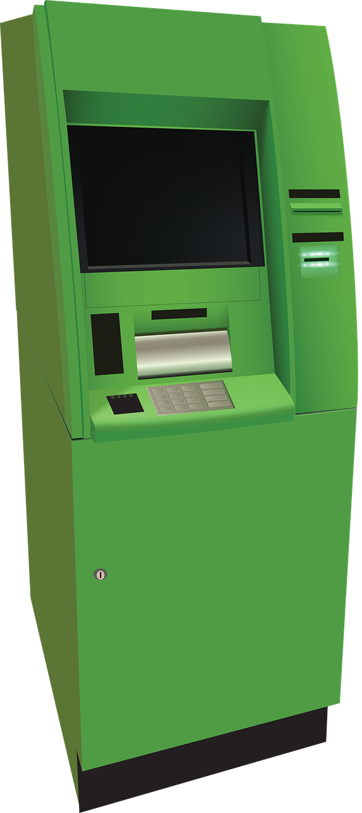
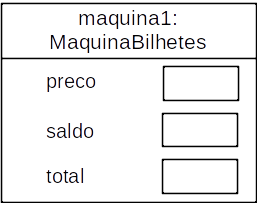
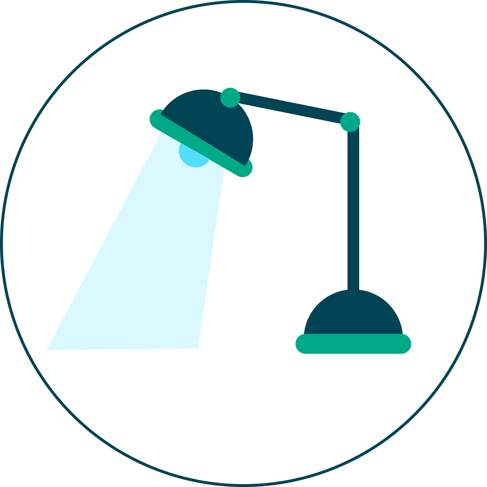
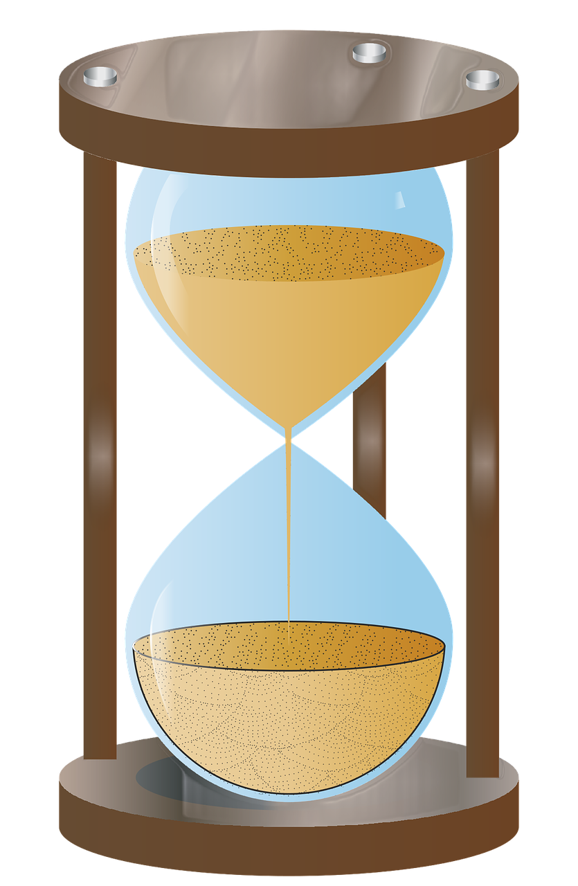

Conceitos Básicos de Orientação a Objetos:
Definição de Classes, Métodos e Construtores
Departamento de Computação Aplicada - UFLA
Conteúdo desta Aula

- Definição de uma Classe
- Atributos
- Construtores
- Métodos
- Passagem de Dados via Parâmetros
- Escopo
- Tempo de Vida
Definição de uma Classe
O código-fonte de uma classe pode ser dividido em duas partes principais:
- Parte externa: simplesmente nomeia a classe.
- Parte interna: contém todo o código que define a classe.
A parte externa se apresenta da seguinte maneira:
Essa parte externa é semelhante para diferentes classes:
- As palavras
publiceclasssão palavras reservadas da linguagem Java. NomeDaClasseé escolhido por quem criou a classe.- Por convenção, começamos os nomes das classes com letra maiúscula.
Definição de uma Classe
A parte interna das classes é onde definimos:
- Atributos: armazenam os dados para o uso de cada objeto.
- Construtores: permitem que cada objeto seja configurado adequadamente quando ele é criado.
- Métodos: implementam o comportamento dos objetos.
A parte interna se apresenta da seguinte maneira:
A linguagem Java permite que o programador escolha a ordem da implementação dos atributos, construtores e métodos dentro da classe.
- Usualmente coloca-se primeiro os atributos, depois os construtores e, por fim, os métodos.
Utilizando um Exemplo

Vamos utilizar como exemplo um projeto que contém somente uma classe, a MaquinaBilhetes.
- Essa classe modela uma máquina de vender bilhetes simples que emite bilhetes com preço fixo.
- O preço do bilhete é definido por meio do construtor.
- Essa máquina considera que os clientes irão inserir a quantidade correta de dinheiro antes de tentar emitir um bilhete.
A Máquina de Bilhetes
Funcionamento básico dessa máquina de bilhetes:
- Clientes inserem dinheiro na máquina e, depois, solicitam que um bilhete seja impresso.
- O cliente pode inserir dinheiro na máquina várias vezes para atingir o preço do bilhete que deseja comprar.
- A máquina mantém a soma total do dinheiro inserido pelo cliente em cada operação de compra.
- A máquina também armazena a quantidade total de dinheiro que ela coletou nas operações de compra.
- Apesar de a máquina lidar apenas com bilhete de preço único, posso criar múltiplas instâncias dessa classe com diferentes configurações de preço.
Analisando a Classe: Atributos
public class MaquinaBilhetes{
// Preço de um bilhete dessa máquina.
private int preco;
// Quantidade de dinheiro inserido pelo usuário.
private int saldo;
// Quantidade total de dinheiro coletado pela máquina.
private int total;
//Construtor e métodos omitidos
}Nessa classe temos três atributos: preço, saldo e total.
Para que servem os atributos?
- Eles são espaços dentro de um objeto que podem ser usados para armazenar valores.
- Cada objeto criado terá um espaço para cada atributo declarado em sua classe.

Analisando a Classe: Atributos
Conceito
Os atributos armazenam dados para um objeto utilizar. Eles também são conhecidos como variáveis de instância.
A definição desses três atributos indica que:
- Eles são atributos privados (private) do objeto.
- Todos são do tipo int, o que significa que cada um pode armazenar um único valor inteiro.
Veja que os atributos são conhecidos como variáveis, ou seja, eles podem variar ao longo do tempo.
- Por exemplo, na máquina de bilhetes, à medida em que mais dinheiro é inserido na máquina, o valor armazenado no atributo saldo é alterado.
Construtores
Conceito
Os construtores permitem colocar cada objeto em um estado previamente definido para ser utilizado. Ou seja, o construtor inicializa um objeto para um estado adequado no momento da sua criação.
O construtor, que é semelhante a um método, tem as seguintes características:
- Sempre tem o mesmo nome da classe onde ele está definido.
- Não tem tipo de retorno, pois ele retorna implicitamente a referência para o objeto.
- Assim como qualquer método, ele pode ter parâmetros.
Analisando a Classe: Construtores
No corpo (tudo que está entre { e }) desse construtor três atributos do objeto estão sendo inicializados.
- saldo e total são inicializados com constantes (neste caso, com zero).
- preco está sendo inicializado por um valor passado por parâmetro para o construtor.
- ou seja, ele é inicializado por valor determinado fora da classe MaquinaBilhetes.

Mas porque o preço do bilhete é recebido de fora?
- A ideia é que possamos criar várias máquinas (objetos) a partir da classe MaquinaBilhetes.
- E que cada máquina possa operar com bilhetes de preços diferentes.
- Por isso, não temos como saber o preço do bilhete de uma máquina específica antes de ela ser criada.
Analisando a Classe: Construtores
Em Java, todos os atributos são automaticamente inicializados com um valor padrão se não forem explicitamente inicializados.
- Para atributos dos tipos int, float e double o valor padrão é zero.

Mas então porque os atributos preco e total foram inicializados no construtor da classe MaquinaBilhetes?
- Porque assim documentamos que realmente queremos que esses atributos tenham valor inicial igual a zero.
- Ninguém pensará que esquecemos de inicializar esses atributos.
- O leitor dessa classe não deixará de entender o código se ele não souber o valor padrão do Java para esses atributos.
Passando Dados via Parâmetros
Os construtores e métodos podem receber valores via seus parâmetros.
- Os parâmetros são variáveis definidas na assinatura do construtor ou de um método.
- Veja nesse exemplo da classe MaquinaBilhetes que o construtor tem somente um parâmetro (custoBilhete) do tipo int.
- Do mesmo tipo do atributo preco que armazenará o valor desse parâmetro.
- Vale observar que, diferentemente de um atributo, um parâmetro é usado para guardar uma informação temporária.
- Parâmetros são usados para trazer dados de fora do objeto para dentro do seu construtor ou método.
Passando Dados via Parâmetros
O nome do parâmetro declarado na assinatura de um construtor ou método é denominado parâmetro formal.
- É comum chamá-lo apenas de parâmetro.
Exemplo: A classe MaquinaBilhetes apresenta a seguinte assinatura para seu construtor:
- Neste caso,
custoBilheteé o parâmetro formal.
Já o valor do parâmetro passado de fora do objeto é chamados de parâmetro real ou argumento.
Passando Dados via Parâmetros
Conceito
O escopo de uma variável define a seção de código-fonte de onde ela pode ser acessada.
- O escopo de um parâmetro formal está restrito ao corpo do construtor ou método onde ele foi declarado.
- De modo diferente, o escopo de um atributo é o total da definição da classe, ou seja, ele pode ser acessado de qualquer lugar dentro da classe.

Passando Dados via Parâmetros
Conceito
O tempo de vida de uma variável define quanto tempo uma variável continuará existindo antes de ser destruída.
- O tempo de vida de um parâmetro formal está limitado a uma única chamada de um construtor ou método.
- Ou seja, ao finalizar a execução do construtor ou método, os seus parâmetros formais desaparecem e os valores que eles armazenam são perdidos.
- De modo diferente, o tempo de vida de um atributo é o mesmo do objeto a que ele pertence.

Analisando a Classe: Métodos de Acesso
Conceito
Métodos de acesso retornam informações ao chamador sobre o estado de um objeto, ou seja, eles fornecem acesso ao estado do objeto. O método obterPreco é um exemplo de método de acesso.
Todo método tem duas partes: a assinatura e o corpo do método.
No caso do método obterPreco, a assinatura é public int obterPreco() e o corpo do método é tudo que fica entre { }, que pode conter declarações e instruções.
- No corpo desse método há apenas uma instrução de retorno (
return preco). - Essa instrução é responsável por retornar um valor inteiro para corresponder ao tipo de retorno declarado na assinatura do método.
Atenção: Quando um método contém uma instrução de retorno (return), ela é sempre a instrução final desse método. Ou seja, nenhuma instrução colocada após a instrução de retorno será executada.
Analisando a Classe: Métodos Modificadores
Conceito
Métodos modificadores alteram o estado de um objeto. Os métodos inserirDinheiro e imprimirBilhete são exemplos de métodos modificadores.
A partir da assinatura do método inserirDinheiro observa-se que ele tem o tipo de retorno void e um único parâmetro formal (quantidade) do tipo int.
- O tipo de retorno void indica que o método não retorna valor para seu chamador.
- E no corpo do método o fato do retorno ser void faz com que não exista uma instrução de retorno.
No corpo do inserirDinheiro há uma única instrução para aumentar o valor do atributo saldo de acordo com o valor passado em quantidade.
Analisando a Classe: Métodos Modificadores
public class MaquinaBilhetes{
//Atributos omitidos
//Construtor omitido
public void imprimirBilhete(){
// Simula a impressão de um bilhete
System.out.println("##################");
System.out.println("# Bilhetes & Cia ");
System.out.println("# Bilhete");
System.out.println("# " + preco + " centavos.");
System.out.println("##################");
System.out.println();
// Atualiza o total coletado com o saldo
total = total + saldo;
// Zera o saldo
saldo = 0;
}
//Demais métodos omitidos
}A assinatura do método imprimirBilhete indica que ele tem o tipo de retorno void e não recebe nenhum parâmetro.
Já no corpo do método:
- As seis primeiras instruções são responsáveis por imprimir um bilhete na tela.
- A sétima instrução adiciona os valores inseridos pelo cliente à quantidade total de dinheiro coletado pela máquina.
- Por fim, a última instrução redefine o saldo da máquina para zero, permitindo que o próximo cliente possa começar a sua compra.
Atenção: quando utilizado entre uma string e qualquer outra coisa, + é um operador de concatenação de string em vez de um operador aritmético de adição.
Variáveis Locais
Conceito
Uma variável local é uma variável declarada e utilizada dentro de um único método.
Características de uma variável local:
- Sua declaração se parece com as declarações de atributos, mas ela nunca tem
privateoupubliccomo parte dela. - Assim como os parâmetros formais, ela tem um escopo limitado ao corpo do método ao qual pertence.
- Assim como os parâmetros formais, seu tempo de vida é o tempo da execução do método.
- Ou seja, ela é criada quando o método é chamado e destruída quando o método termina.
Observação
Variáveis locais são frequentemente utilizadas como posições de memória temporária para ajudar um método a completar sua tarefa.
Código Completo da Classe MaquinaBilhetes
public class MaquinaBilhetes{
// O preço de um bilhete desta máquina.
private int preco;
// A quantidade de dinheiro que o usuário colocou até o momento.
private int saldo;
// A quantidade total de dinheiro coletado pela máquina.
private int total;
/**
* Cria uma máquina que emite bilhetes de um dado preço.
* Note que o preço deve ser maior que zero, e não tem
* nenhuma verificação para garantir isso.
*/
public MaquinaBilhetes(int custoBilhete){
preco = custoBilhete;
saldo = 0;
total = 0;
}
/**
* Retorna o preço do bilhete.
*/
public int obterPreco(){
return preco;
}
/**
* Retorna a quantidade de dinheiro já inserida para o
* próximo bilhete.
*/
public int obterSaldo(){
return saldo;
}
/**
* Recebe uma quantidade de dinheiro de um cliente.
*/
public void inserirDinheiro(int quantidade){
saldo = saldo + quantidade;
}
/**
* Imprime um bilhete.
* Atualiza o total coletado e reduz o saldo para zero.
*/
public void imprimirBilhete(){
// Simula a impressão de um bilhete
System.out.println("##################");
System.out.println("# Bilhetes & Cia ");
System.out.println("# Bilhete");
System.out.println("# " + preco + " centavos.");
System.out.println("##################");
System.out.println();
// Atualiza o total coletado com o saldo
total = total + saldo;
// Zera o saldo
saldo = 0;
}
}